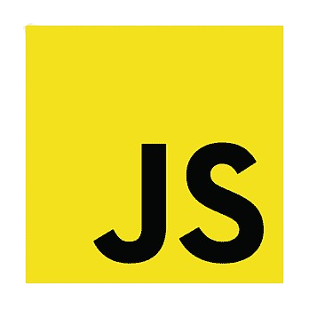

Tech Stack

React

JavaScript

HTML

CSS
As someone who exercises daily, finding simple but nutritional recipes is very important to me. Constantly finding new recipes, however, can be hard, and I find myself eating the same boring meal over and over. I developed Meal Me! to help myself and others find healthy recipes based on their caloric needs!
React
JavaScript
HTML
CSS
Personalized Meal Plans: Generate daily meal plans based on caloric requirements and dietary preferences.
Favorite Recipes: Save favorite recipes to access again later.
User Profiles: Each user's meal plans and preferences are stored securely.
Mifflin-St Jeor Caloric Equation: Uses the Mifflin-St Jeor equation to find an ideal caloric goal based on the users information and lifestyle preferences.
Firebase Database & Authentication: Utilizes Firebase database and authentication to securely store and fetch information.
Spoonacular API: Connects to the Spoonacular API to fetch thousands of recipes based on caloric needs.
Local Storage: Uses local storage to support daily caching to reduce unnecessary API calls.